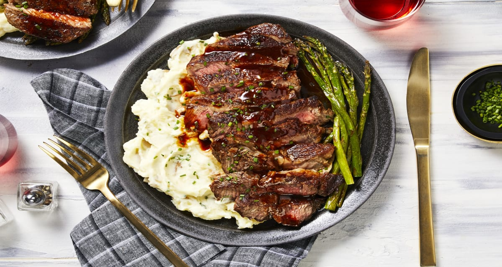
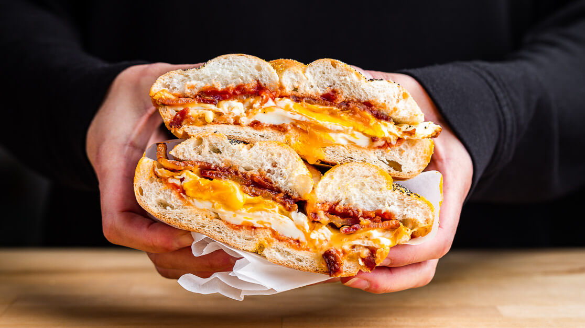
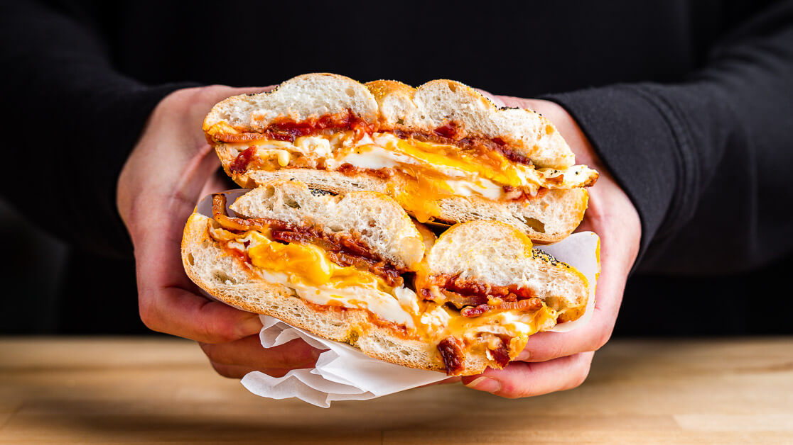
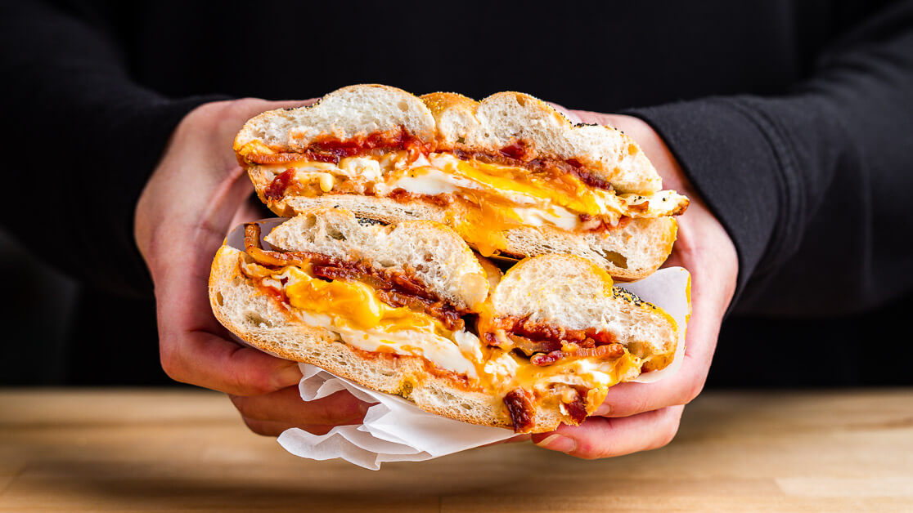

Home page
These are my 3 favorite ....


Here they are with rounded corners
Here they are with circles
here are they are with the blur
here they are with a orange dashed border
here they are hue-rotate,in circles and with borders
lab4
 
lab4

lab4